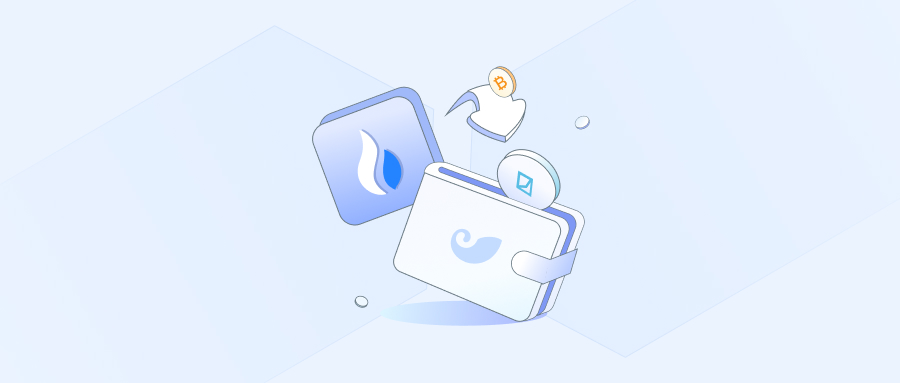
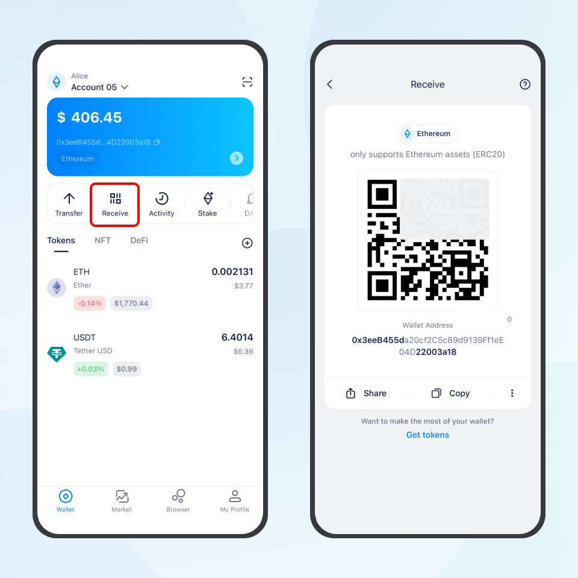
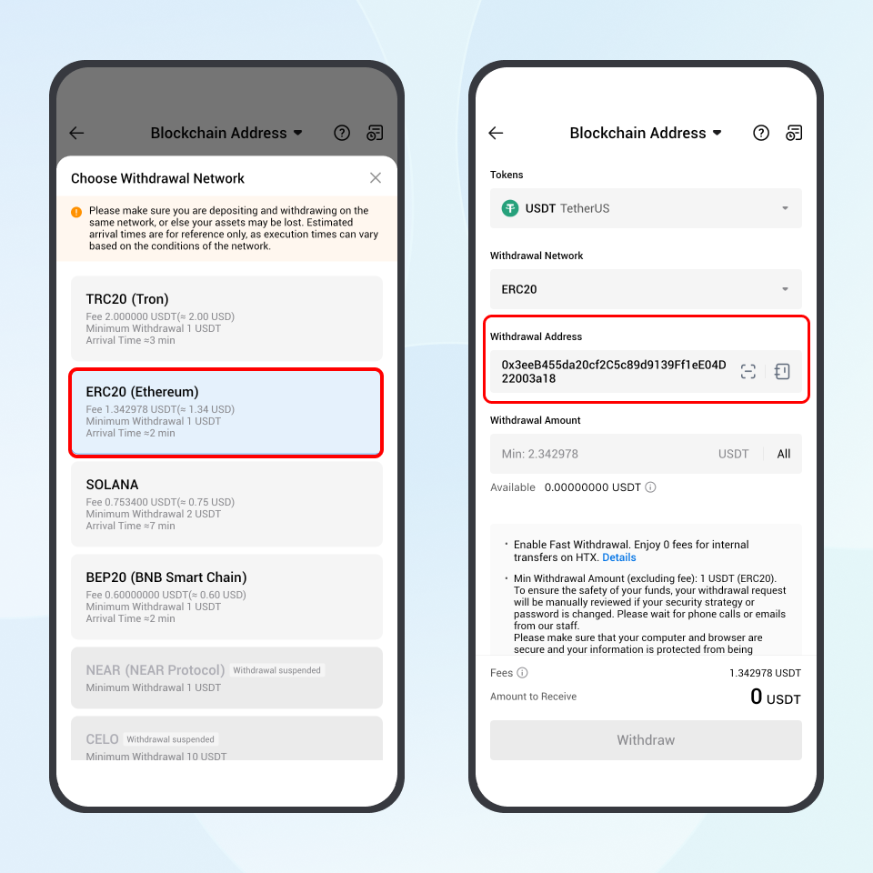

Before withdrawing from HTX to imToken, please make sure the token you want to withdraw is supported by imToken. When withdrawing, always check that the withdrawal network selected on HTX is exactly the same as the network of your receiving account in imToken.
For the same token, such as USDT, exchanges usually support withdrawals through multiple networks. You can choose the corresponding account address in imToken based on the network you want to use.
In other words, first confirm which account in imToken will receive the token, then select the matching withdrawal network on HTX. If the token is transferred to an incompatible network, it will not be displayed in your wallet.
Common Network Mapping
| Receiving account in imToken | Withdrawal / transfer network | Gas token required for future transfers |
| Ethereum account | Ethereum (ERC20) | ETH |
| Tron account | Tron (TRC20) | TRX |
| Arbitrum account | Arbitrum One | ETH on Arbitrum One |
| BTC account | Bitcoin | BTC |
Note: Ethereum, Arbitrum, and other EVM accounts under the same wallet usually share the same address format. Always make sure the current account network in imToken matches the withdrawal network selected on HTX before transferring assets.
You can follow this imToken guide together with HTX’s official withdrawal guide.
How to Withdraw to imToken
1. Switch to or Add the Corresponding Network Account in imToken
Open imToken and tap the account name in the upper-left corner. On the account selection page, switch to the account you want to use for receiving assets. The following steps use receiving USDT in an Ethereum account as an example.
- If you do not have the corresponding network account yet, go to My Profile - Manage wallets, then tap Add on the right side of the wallet where you want to add the account. Select the corresponding network icon and confirm.
- After the account is added, return to the wallet homepage to enter the newly added account. For example, select Ethereum to add an Ethereum account.
2. Copy or Confirm the Receiving Address in imToken
- On the account homepage, tap Receive.
- After confirming that the current receiving account network is correct, tap Copy to copy the wallet address.
💡 If this is your first withdrawal, we recommend making a small test transfer first. After confirming that the test transfer has arrived successfully, you can proceed with a larger withdrawal.

3. Withdraw from HTX
- Open HTX and go to Assets, then select Withdraw.
- Select the token you want to withdraw, and tap Blockchain Address.
- Select the network. Make sure it is exactly the same as your receiving account network in imToken. For example, if you copied an Ethereum account address from imToken, select the ERC20(Ethereum) network on HTX.
- Paste the receiving address you copied from imToken into the Address field.
- Enter the amount you want to withdraw and review the security reminders on the page. Before submitting, carefully check the following information:
- Token and withdrawal amount
- Withdrawal network
- Receiving address
- After confirming that all information is correct, tap Withdraw - Confirm, then complete the security verification on HTX and submit the withdrawal transaction.

Tips
- Arrival time: The time it takes for the withdrawal to arrive depends on HTX’s review process and the status of the blockchain network. Please refer to the withdrawal page on HTX for the actual status.
- Gas fees for future transfers: After the withdrawal arrives, if you want to transfer the token out from imToken later, you will need the native token of the corresponding network to pay Gas fees. Gas fees are charged by the blockchain network. For example, transfers on Ethereum require ETH, transfers on Tron require TRX, and transfers on Arbitrum require ETH on Arbitrum One.
- Withdrawal not received: If your withdrawal has not arrived after a long time, first check the transaction status, withdrawal address, withdrawal network, and Tx ID, also known as the transaction hash, in your HTX withdrawal record. You can then view the transaction details on the corresponding blockchain explorer. For troubleshooting, refer to “Why Hasn’t My Withdrawal from an Exchange Arrived in imToken?” If you still need help, contact us through Help & Feedback in the imToken app and provide the information above.
End
For best security on large amounts of crypto, consider our hardware wallet, imKey.
Risk Warning: The content of this article does not constitute any form of investment advice or recommendation. imToken does not make any guarantees and promises for the third-party services and products mentioned in this article, nor assume any responsibility. Digital asset investment has risks. You should carefully evaluate these investment risks and consult with relevant professionals to make your own decisions.